The guide
- PRESETS (the knob): choose the scene: Sakura, Koi or Hotaru.
- ALGORITHM (the knob): choose the mood, such as Morning or Night.
- MASTER: the volume.
- PLAY: draw a new picture, such as a new tree or a new pond. The music keeps playing.
The controls
ZEN-1 starts in the scene you used last. Your changes are saved by themselves about 20 seconds after you stop touching anything. Only the buttons that do something are lit.
| PRESETS | Choose the scene: Sakura, Koi or Hotaru. The name shows as you turn, and the scene changes half a second after you stop. |
|---|---|
| ALGORITHM | Choose the mood: the time of day and the feel of the scene. See Moods. |
| SELECT | Activity: how busy the scene is. Turn it down for a few slow notes and a calm picture; turn it up for more going on and more notes. See the knobs. |
| KNOB 1–4 | Change the four settings on the page that's showing. Their names and values appear for three seconds. |
| FX | Show the knob pages. Each press while they're showing goes to the next page: Scene, Volume, Nature, Music, Key. |
| SEL | Go back one page. If no page is showing, it opens the Scene page, as FX does. |
| GLO | Switch between the painted look and pixel art. |
| ENV | The panel's lights. Each press sets the next: On, Auto, Off.
|
| PLAY | Draw a new picture: a new tree and moon, a new pond, or a new field and moon. It fades in gently, and the music keeps playing. |
| HOME |
|
| SEQ | The sleep timer.
|
| SAVE |
|
| OCT− · OCT+ |
|
| MASTER | The volume. |
| Keys |
|
The knobs
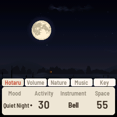
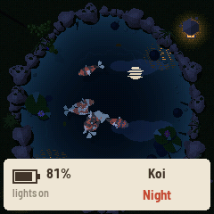
Press FX to show the knobs. There are five pages of four, and every scene uses the same layout, so a knob is always in the same place. The tabs along the top show which page you're on.
Scene page
- Mood: the time of day and the feel of the scene (the same as the ALGORITHM knob). See Moods.
- Activity (0–100): how busy the scene is, and so how many notes play, from about one every five seconds
up to about three a second.
- Sakura: how many petals are falling, and how windy it is
- Koi: how much food falls in, and how hungry the koi are
- Hotaru: how many fireflies are out
- Instrument: the sound the notes are played with, such as koto or bell. Each scene has its own list.
- Space: how much reverb: from a dry, close sound to a large, echoing room.
Volume page
- Notes: the melody notes the scene plays.
- Drone: the soft, steady hum underneath the notes.
- Air: the background sound of the air: wind or insects (choose which on the Nature page).
- Water: the background sound of water: a brook, bubbles, rain and so on (choose which on the Nature page). In Hotaru this knob is Frogs instead.
Nature page
- Two settings of the scene's own, such as how often the bamboo knocks in Koi. See each scene below.
- Air Type: which air sound plays.
- Soft: a gentle made-up breeze
- Breeze: a recording of wind in trees
- Insects: a recording of crickets, fuller at night
- Water Type: which water sound plays. Each scene has its own list.
Music page
- Echo: how much the notes echo. At 0 there are no echoes; turned up, more notes come back softly a few seconds later.
- Warmth: the tone of the whole sound, from bright and clear to soft and mellow.
- Phrases: how the notes are chosen.
- Free: each note follows what happens on screen.
- Loops: notes come from four short repeating patterns of different lengths, so tunes come back but never line up the same way twice.
- Tide (0–100): how much the music slowly swells and fades. Over three to six minutes it moves between quiet and sparse, and full and bright. At 0 it stays even.
Key page
The music's key, scale and chord, for playing along or for a sound you like. Unlike the other pages, these are one setting for every mood and every scene. Each starts as the mood has it, so nothing changes until you turn one.
- Key: Mood (the mood's own key, which can drift), or C to B: the drone and every note center on that key, whatever the mood.
- Scale: Mood (the mood's own; in Natural, Yo by day and Min'yo from golden hour), or Yo, In or Min'yo always.
- Chord: Moving (the drone's chord changes every one to three minutes) or Held (it stays on the key's home chord).
- Drift: how often the key wanders up or down a fourth or fifth in Natural: Off, Slow (every third day) or Often (every day). It doesn't drift while Key is set to a note.
Turning tips: a knob with a list of choices wraps round past either end. A knob with a number stops at its ends, and turning quickly moves faster.
Moods
The Mood knob sets a scene's time of day and its whole character at once: how busy it is, its sounds, its key and scale. Changing it glides there over about thirty seconds; nothing jumps.
- Natural (the default): a whole day, or a whole night, every half hour. The music follows the light:
- Livelier by day, in the bright Yo scale
- Quieter and warmer from golden hour through the night, in Min'yo
- Now and then at dawn the key drifts a fourth or fifth.
- The scene's four each hold their own time and sound, in their own key and scale, in the order the day (or night) meets them.
- Your tweaks: turn any knob and the mood you are in keeps your setting.
- The first time, a note says "Morning · your own now" (or whichever mood).
- From then on its name has a small dot after it, on the knob bar and on the HOME card.
- Every mood of every scene keeps its own tweaks, after a power-off too: switch to another mood and back, and yours are there.
- A tweaked Natural still runs its whole day, the sound still following the light.
- Reset: on the Mood knob, a tweaked mood is followed by "Reset" and its name. Leave the knob there for two seconds and that mood goes back to how it was made; turn on and nothing changes.
The music
- From the world: every note comes from something you can see happen. Where it happens chooses the note; how fast and how near, how loud.
- The drone breathes: three voices, each coming and going on its own cycle, one now and then sitting a breath out, so it is never still and never gone.
- Tide: a slow ebb and flow of three to six minutes between sparse (fewer notes, more echo, darker) and full.
- Rests: every few minutes the notes pause for 8 to 18 seconds, a breath, while the drone and the world go on. Your own keys always sound.
- Scales: the Japanese pentatonic Yo (bright), Min'yo (warm) and In (dark).
- Echo, Space and Warmth shape the room it all plays in.
Sakura 桜
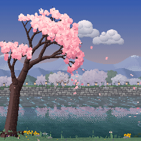
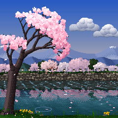
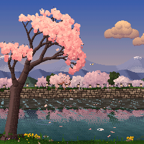
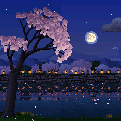
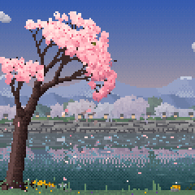
A Somei-Yoshino cherry, nearly white in bloom, leans out over a narrow city stream. Every new picture is a new tree, a new far bank and new hills.
What you see
- The tree: sprays of flowers along its twigs, lit from above with cool shade beneath. Sunlight slants through it to dapple the water.
- The far bank: a stone wall rising to a path lined with cherries, their crowns meeting and blossom hanging over the wall, an evergreen here and there, and paper lanterns (bonbori) all along.
- Beyond: range after range of hazy blue hills, sometimes with snow left on the far peaks, under a soft spring sky.
- The water: jade, with the bank and its trees mirrored in it, the reflection wavering with the ripples.
- Ripple marks drift downstream, and a gust darkens the water as it runs across.
- Petals gather into rafts (hanaikada) and drift slowly downstream.
- Our bank: the tree's roots, mossy stones, reeds that sway in the wind, rapeseed and violets, and fallen petals that build up under the tree through the day.
- Visitors: a butterfly passes, a bush warbler lands on a branch and sings, and a light spring shower comes over.
What you hear
- Each petal that lands makes a koto note, pitched by where it lands. Far-off petals, and those at night, bloom as soft swells.
- Floating petals that touch make a quiet note of their own.
- A gust shakes loose a shower of petals with a harp run or a glass wind chime.
- Now and then a whole cluster of blossoms falls and lands with a double ring and a deep bowl.
Moods
- Morning: a pale mist over the far bank and the river.
- Afternoon: full sun, streaks of light drifting on the water.
- Golden Hour: warm orange light on the blossoms, the sky going pink to violet.
- Night (yozakura): the tree lit pale pink against the dark, under stars and the moon (in this mood it
stands clear of the tree, high on the right).
- The moon is Hotaru's: drawn from a real map of its face, a new phase and size each picture (full, gibbous, half or crescent, waxing or waning), with a soft glow. Through a Natural day it rises over the hills at the hour its phase really does, passes behind the tree and the clouds, and sets toward dawn. Each new Natural day brings another phase.
- The paper lanterns along the far bank light one after another, lighting the blossom above them.
- Their light and the crown's lie in streaks on the river.
Settings
- Instrument: Warm, Koto, Koto II, Pluck, Ring
- Water Type: Bubbles, Brook, White, Pink, Deep, Rain
- Nature page:
- Clusters: how often a blossom cluster falls (0: never)
- Gust Sound: Harp or Chime
Keys
- White keys: the koto plays your note, and the blossoms above that key shake. A few seconds later two petals land with your note again, softly.
- Black keys: the harp, low to high, each note ringing out from somewhere on the open water.
Koi 鯉
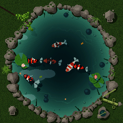
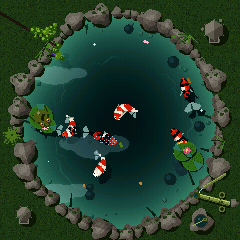
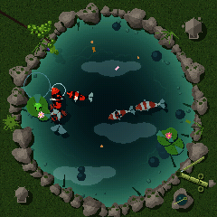
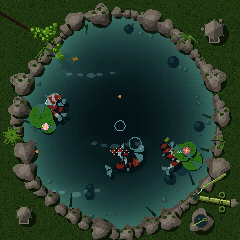
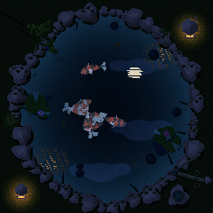
Koi of the real varieties swim in a garden pond. PLAY makes a new pond, a new shape with new koi.
What you see
- The koi (every pond has at least three varieties, and one koi bigger than the rest):
- Kohaku: white with red patches
- Sanke: white and red, with small black spots
- Showa: black, red and white
- Tanchō: white with a red circle on the head
- Asagi: blue-gray with a net of scales, orange along its sides
- Ogon and platinum: metallic
- Kigoi: yellow
- Now and then a butterfly koi, with long, trailing fins
- How they move: they stroke and glide, hover with their fins fluttering, follow one another, rest in the shade under the lily pads, and rise with mouths open to take food at the surface. Lower down they are dimmer and bluer, their shadows on the floor.
- The pond: an edge of mossy stones (some reaching over the water), clumps of iris and sedge, ferns, a maple branch over a corner and pebbles in the shallows; veined lily pads in clusters with white or pink water lilies, and leaves afloat. Clouds drift across the water, lines of light play on the floor, and breezes ruffle the surface.
- The shishi-odoshi: a bamboo pipe that fills and knocks, over a stone basin with a ladle across it.
- Frogs: six Japanese pond frogs, in their real colors and markings, each as common as it would be at a
garden pond. They leap onto the lily pads (the pad bobs under them), sit blinking and breathing, turn now and then,
croak at a pitch to match their size and dive back in with a splash, and the koi turn to look.
- The black-spotted pond frog
- The Daruma pond frog
- The Japanese tree frog
- Schlegel's green tree frog
- The warty wrinkled frog
- The big bullfrog
What you hear
- Every bite of food is a note: deep in the middle low, near the rim high.
- A few pellets fall in by themselves (smaller and paler than yours), and now and then a petal drifts in from Sakura's tree.
- A koi that has eaten is full for a while, so some food sinks uneaten, and may come back later as a soft bowl note: the pond remembers.
- Two koi passing close, or one rising to mouth at the surface, ring a singing bowl.
- The shishi-odoshi knocks, and the frogs croak.
Moods
- Feeding: bright midday, glints winking on the water, the koi quick and near the top.
- Still Pond: soft light, the koi deeper and slower.
- Rain: a gray sky on the water. Every drop you see land you also hear, there, and a few splash on the lily pads.
- Night: two stone lanterns light up on the moss, a tall kasuga lantern at the bottom left and a low
snow-viewing lantern (yukimi-dōrō) at the top right. Each glows warm on the moss and the nearest stones, a small flame
in its firebox, its light broken into shimmering streaks on the ripples.
- The moon's reflection wavers, and the water and stones are touched by moonlight.
- The koi are pale shapes below.
Settings
- Instrument: Drop, Mallet, Bell, Koto, Warm
- Water Type: Soft bubble, Bubbles, Trickle, Brook, White, Pink, Deep, Rain
- Nature page:
- Koi Count: 3–9 (6 at first)
- Bamboo: how often the shishi-odoshi knocks (0: never)
Keys
- White keys: play your note and drop food on its ring, on your side of the pond. The koi come over, and when one finds it you hear the note again. Play a melody and the koi play it back in their own order.
- Black keys:
- The lower ten each toss a pebble onto its ring, each with its own bowl note.
- The top one tips the shishi-odoshi.
Hotaru 蛍
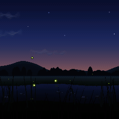
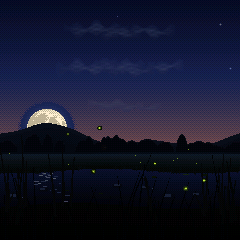
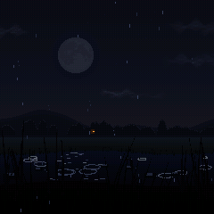
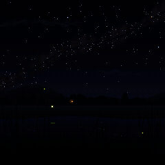
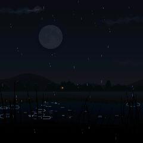
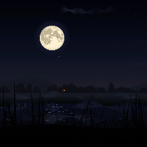
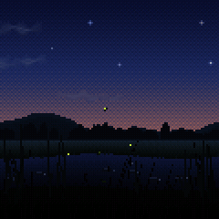
Fireflies drift over a summer field and a slow stream among swaying reeds.
What you see
- The fireflies: each flashes every four or five seconds on its own clock and nudges the others toward its timing, so over a few minutes the whole field falls into one gentle pulse, holds it, and drifts apart again. Their glows waver in the stream.
- Through the night: in Natural, only a few are out at dusk and the rest come out over the next few minutes, as real fireflies do after sunset. They are most in the first part of the night, then fewer toward midnight, and fewer still toward dawn.
- The moon is drawn from NASA's Lunar Reconnaissance Orbiter map, its seas where they really are.
- Full, gibbous, half or crescent, and another phase each new Natural night.
- It takes the path its phase really does: a full moon rises at dusk and stands highest at midnight, a half moon is already high at dusk, and a crescent sets early.
- Its light lies on the stream only while you can see it.
- Clouds drift across now and then: soft, thin wisps, silvered where they pass near the moon, and veiling it as they cross.
- The stars come out the brightest first, scattered in loose clusters, a few faintly blue or warm, dimmed near the moon and low in the haze. A shooting star crosses now and then.
- Weather (Auto, Clear, Mist, Rain):
- Mist rolls in in soft, drifting fog banks that lift and thin toward dawn. The moon's glow is hazy, fireflies glow softly in the fog, and a farmhouse window shines warm through it.
- Rain brings low cloud, rings on the stream and splashes on the reeds, and the fireflies shelter on the reeds, glowing slowly. It starts with a few drops and builds over several seconds; when it stops, the drops still in the air fall on out.
- Auto: the weather changes now and then by itself. Turned by hand, it arrives within seconds.
What you hear
- A blink is a soft note, and blinks that come together make a small chord.
- Now and then a star slowly brightens, and is heard; a shooting star crosses with a chime.
- Frogs call and answer, crickets fill the night, and an owl hoots far off.
- A full moon brightens the music; a crescent makes it darker and slower, with longer echoes.
Moods
- Dusk: the last warm glow over the hills, the first fireflies rising.
- Festival: early in the night, when fireflies are most out: a full moon rising over the hills, the most fireflies of any mood, blinking together.
- Quiet Night: later in the night, as it is.
- Deep Night: the darkest sky, a thin crescent or none, many more stars and the Milky Way.
Settings
- Instrument: Bell, Furin, Drop, Koto, Warm
- Water Type: Off (the default), Bubbles, Brook, White, Pink, Deep, Rain
- Phrases:
- Height: higher fireflies sound higher
- Across: left to right
- Own: each keeps its note
- Loops
- Nature page:
- Weather
- Owl Calls: how often (0: never)
Keys
- White keys: a firefly rises from the grass to your note's height and joins the rhythm.
- Black keys:
- A note each, low to high across the white keys' range, and a firefly at that height flashes with it (if none is near, the nearest drifts there as it lights).
- The top one sends a breeze from the left that bends the reeds and carries the fireflies away; new ones rise after it.
The instrument (FuMi-1)
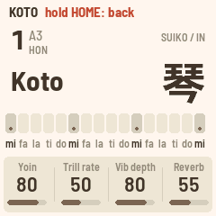
Hold HOME for FuMi-1's koto, and hold it again to go back. MIDI in (USB and the TRS jack) plays it chromatically, at each note's own velocity, and its keys send notes out on channel 1.
| White keys | mi fa la ti do × 3 and a top mi, after the Suiko ST-50. The tonics (keys 1, 6, 11, 16) are lit. |
|---|---|
| Black keys | The upper row fa♯ sol ti♭ do♯ re. SEQ switches them to ornaments: vibrato, trill, damp, strong pluck. |
| SELECT | 本数 (the key) |
| PRESETS | The instrument: koto, sho, shakuhachi, flutes, kokyū, taiko, hyōshigi, mokugyo, harp |
| ALGORITHM | The scale: IN, YŌ, MIN'YŌ |
| KNOB 1–4 |
|
| OCT− · OCT+ |
|
| LFO · ARP · GLO | Vibrato · trill · mono |
| SEL | Taps between 平均律 (equal temperament) and 純正律 (just intonation) |
| HOME (hold) | Back to the scene |
| SAVE | Save. Held 3 s: every setting back to the defaults. |
Version 1.2. Suiko and ST-50 are names of Suikohsha; M-VAVE and FM-1 are trademarks of their owners. ZEN-1 is affiliated with none of them. Site from commit ec92952.